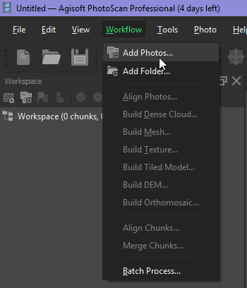

Pre proceedure
- Open Agisoft PhotoScan.
- Click Workflow drop down menu and click Add photos. See Figure 1a.
- Browse to your folder and add all JPG files.
- Workspace shows loaded images as a list under Chunk1 and Cameras. See the Figure 1b.
- The loaded photos can be seen on the Photos pane in the lower of the software GUI.
- In the Model pane, camera positions are shown with respective image names. Camera position can be turn on/off by clicking the Camera icon in the top tool bar.
- To view the images’ geotag data (including roataion angles), click Reference tab at lower left. See the Figure 1c.

Figure 1a: Workflow menu

Figure 1b: Workspace view

Figure 1c: Reference pane view
- Before starting the next process, change the coordinate system to your local coordinate system to match the coordinate system with your GCP coordinates. To change it, click Convert icon in the Reference pane. Select your coordinate system and click OK in the new window. See the Figure 2a.

Figure 2: Convert coordinates